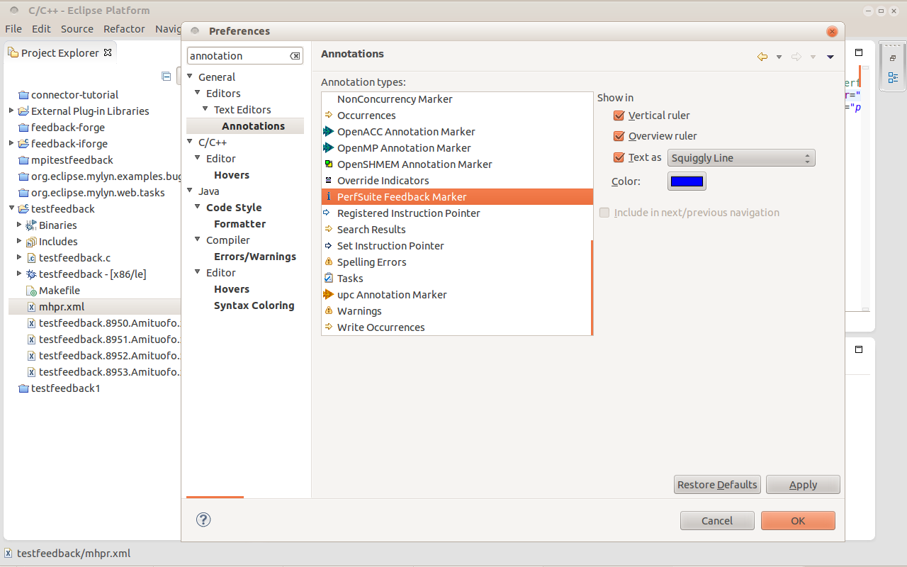

PTP ETFw PerfSuite Feedback ViewPTP ETFw PerfSuite Feedback View
PTP ETFw PerfSuite Feedback ViewPTP ETFw PerfSuite Feedback ViewPerfSuite is a collection of tools and libraries for software performance analysis on Linux-based systems. It supports counting and profiling using CPU and other (such as network, thermal) hardware performance counters, and interval timer profiling.
The Parallel Tools Platform External Tools Framework Feedback View (PTP ETFw Feedback View) provides a convenient way to use the file name and line number information contained in an XML file to allow a user to easily navigate to the lines in the files.
The PTP ETFw PerfSuite Feedback View plug-in is based on the above feature. Specifically, it provides an Eclipse view, exposing information found in an XML file of the type "multihwpcprofilereport" -- a specific type of XML file that PerfSuite generates -- with convenient mapping and navigation to source lines referenced in the XML file. With this, a user may find it easier to correlate the source code with the information contained in the XML file -- the hot spots, where the most samples are collected during a previous run.
)
in the toolbar, or select the menu "Feedback -> PerfSuite Feedback",
or type the keyboard shortcut CTRL-7.
The PerfSuite Feedback View Plugin parses the xml file, creates markers that are associated
with the source code files, and create a feedback view with line items which are associated
with the markers.
The line items are initially all collapsed. You can click on the triangle symbol in front of
the individual parent nodes to expand them, or use the
"Expand All" button ( ) in the view's toolbar.
) in the view's toolbar.
The line items are grouped by the files. The format of the section is "<hostname>-PID_<pid>-thread_<threadid>". In an MPI run, the thread IDs are all 0s, but the PIDs are different. In a pure OpenMP run, the PIDs will be the same, and the thread IDs will be different numbers instead of all 0s.
The line items are sorted in the order from the most samples to the least. Since the line items must have associated markers, which in turn associate with the files inside of the Eclipse work space, for the files which PerfSuite's psrun collected samples from but are not inside of the Eclipse work space, the line items will not appear in the view. This typically happens for the shared libraries used by the program.
SHELL=/bin/bash all: build run process build: mpicc -g -O2 -o testfeedback testfeedback.c run: source /home/ruiliu/tmp/nightly-test/perfsuite-install/bin/psenv.sh; \ mpirun -np 4 /home/ruiliu/tmp/nightly-test/perfsuite-install/bin/psrun -f -C -c papi_profile_cycles.xml ./testfeedback process: /home/ruiliu/tmp/nightly-test/perfsuite-install/bin/psprocess -x -o mhpr.xml testfeedback.*.xml clean: rm -rf testfeedback mhpr.xml testfeedback.*.xmlWe selected the menu item "Project -> Clean", followed by "Project -> Build All". After that, the "testfeedback" program was built, run with "psrun", and the generated "testfeedback.*.xml" files were processed by "psprocess" and combined into "mhpr.xml".

Several GUI items were added by this feature, as shown in the following screen shots.


The preference items allow a user to choose for the lines associated with
the markers: whether the markers appear in the
vertical ruler, the overview ruler or neither, whether the text is highlighted or
underlined with squiggly lines or neither, and the background color
of the lines.
